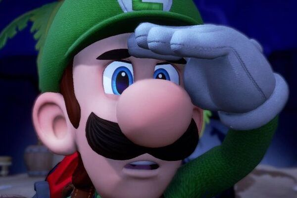

Luigi The Brother
Luigi is Mario’s younger brother, known for his green outfit, taller frame, and timid personality.
He’s the loyal sidekick who occasionally steps into the spotlight in his own spooky adventures.
Luigi was originally a simple color swap of Mario for 2-player mode in Super Mario Bros. His full personality developed over time, especially in the Luigi’s Mansion series.
Luigi represents the underdog—he’s relatable, a little anxious, and full of heart. His growth from “Player Two” to lead character has earned him a cult following.

Quotes (If you could call them that):
placeholder
placeholder
placeholder